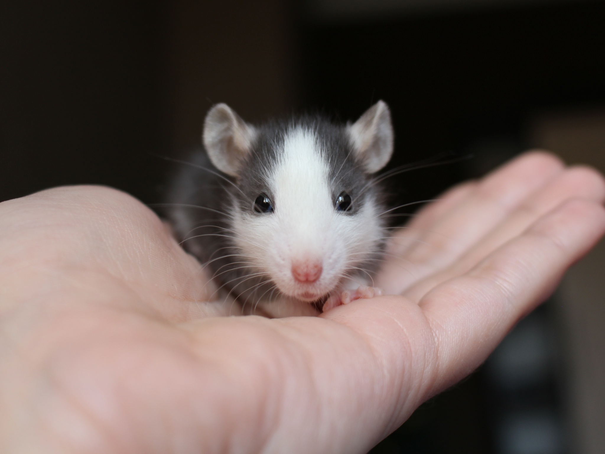
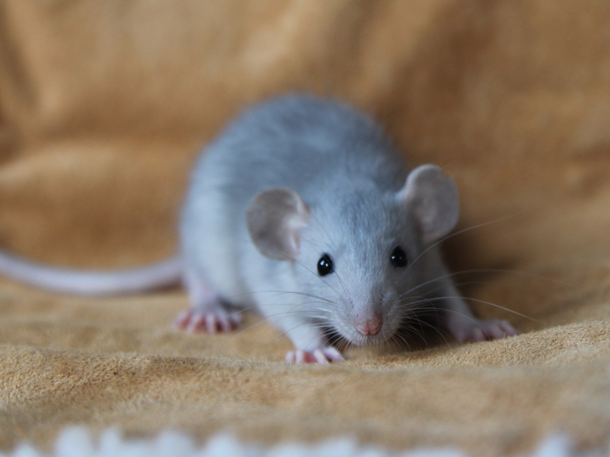

Приручение
Дайте малышу некоторое время освоиться и привыкнуть к новому жилищу, ведь переезд в незнакомое место – всегда стресс. Лучше, если освещение будет неярким, а в комнате будет тихо, любые громкие и незнакомые звуки могут напугать крысенка.
В первую очередь следует понять, что приручение – совершенно индивидуальный процесс, зависящий от характера крысы и еще множества различных факторов. Кто – то подружится уже через пару дней, кому-то может понадобиться больше месяца.
Как можно чаще разговаривайте с крысенком спокойным, ласковым голосом (они хорошо понимают интонацию и чувствуют настроение), старайтесь не делать резких движений. Пусть привыкает к вашему голосу и запаху.
Осторожно кладите руку в клетку, чтобы малыш мог ее обнюхать, рассмотреть, и просто привыкал к ней. Пусть поймет, что никакой опасности для него нет, не пытайтесь поймать крысенка, когда он приблизится к руке.
Давайте лакомства и пищу из рук. Скорее всего, малыш будет их утаскивать в укромный уголок, поэтому стоит давать жидкую пищу – йогурты, детское питание, кефир. Сначала с края, потом – наливая в середину ладони, так, чтобы крысенку приходилось забираться на руку. Крыса просто будет вынуждена мириться с близостью вашей руки и быстро поймет, что такая близость сопровождается только приятными событиями. Постепенно руку с лакомством следует перемещать все ближе и ближе к себе.

Брать на руки крысенка тоже надо правильно – аккуратно, как будто вы зачерпываете воду руками. Так малыш видит ваши руки. Брать, занося руку над крысой, или со спины, не стоит, у них сразу включается инстинкт: хищники всегда нападают сверху.
Очень хорошо помогает выпускать малыша погулять на кровать с вашими ношеными вещами. Крысенок будет исследовать пространство, копаться в одежде, бегать под ней, привыкая к вашему запаху.
Носите крысенка за пазухой. Наденьте халат, или просторную кофту, завяжите пояс, чтобы было свободное пространство. Крысам нравится ползать в рукавах, под одеждой она будет чувствовать себя спокойнее, как в укрытии, и при этом будет привыкать к вашему запаху, вашему голосу. Не помешает «закрепить эффект» чем-нибудь вкусным, что крыса обязательно съест, сидя у вас на коленях или под одеждой. Вы станете для крысы «вторым домом», ведь у вас под одеждой можно спрятаться и ничего не опасаться.
Если у вас две крысы, и с одной из них вы уже подружились, то имеет смысл выгуливать их вместе. Пусть недоверчивый крысенок видит, как вы общаетесь с его собратом, почесываете его, как ему это нравится. Таким образом, крыса быстрее начет вам доверять.
У всех крыс разные характеры, некоторые могут просто не любить, когда их ловят в клетке или на прогулке, предпочитая подходить сами, когда захочется им, а не вам.
Помните, самое главное – терпение и мягкая настойчивость.
